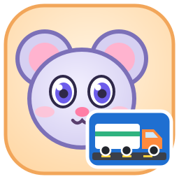
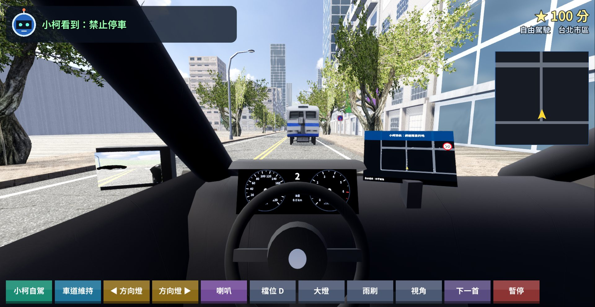
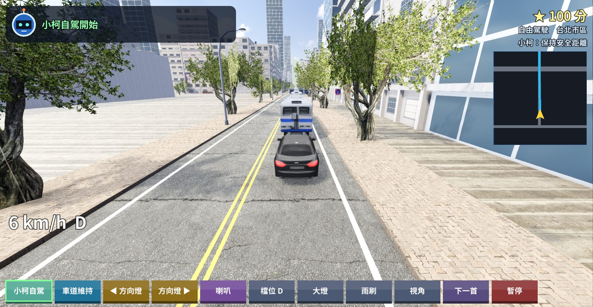
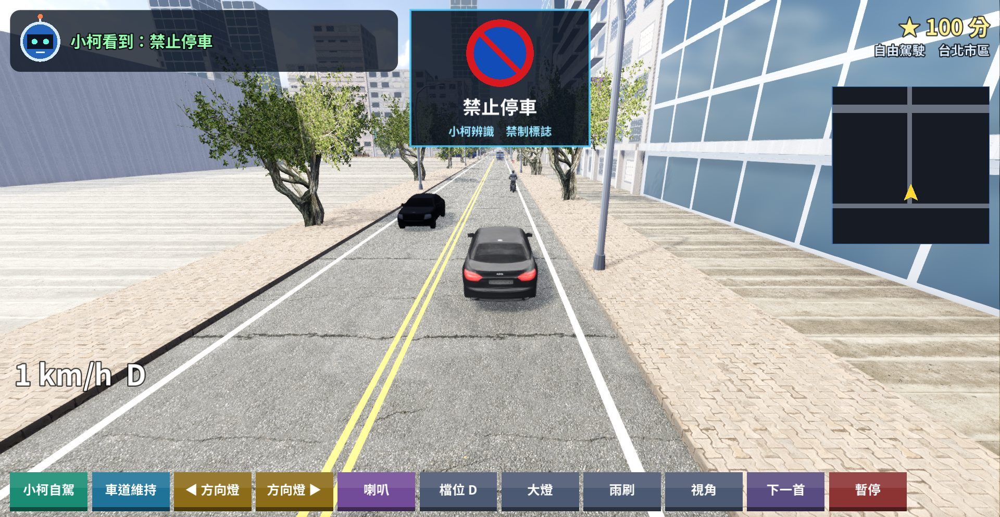

眼動鼠之寶島卡車
用眼睛開卡車：坐在寫實駕駛座裡，跑遍台北、高雄、日月潭、太魯閣、墾丁與國道，小柯機器人陪你學開車。



看邊緣轉頭
眼睛看畫面左右邊緣，頭就轉過去看後照鏡與窗外；看回中間就回正。
眼睛看畫面左右邊緣，頭就轉過去看後照鏡與窗外；看回中間就回正。
寫實駕駛座
曲面儀表板、儀表、方向盤、雨刷與後照鏡；平板導航會用語音報路。
曲面儀表板、儀表、方向盤、雨刷與後照鏡；平板導航會用語音報路。
台灣 7 張地圖
台北市區、國道、日月潭、高雄、太魯閣、墾丁與駕訓班場地。
台北市區、國道、日月潭、高雄、太魯閣、墾丁與駕訓班場地。
交通標誌辨識
小柯看到標誌會說出名稱與意思，幫你記住交通規則。
小柯看到標誌會說出名稱與意思，幫你記住交通規則。
駕訓班 10 課
起步、轉彎、倒車入庫、路邊停車……語音一步一步教。
起步、轉彎、倒車入庫、路邊停車……語音一步一步教。
10 種考驗
下雨、夜間、高速公路、寒流起霧、颱風、塞車、事故、救護車、機車鑽車陣。
下雨、夜間、高速公路、寒流起霧、颱風、塞車、事故、救護車、機車鑽車陣。
小柯自駕
累了就交給小柯機器人開，自動跟車、停紅燈、轉彎到目的地。
累了就交給小柯機器人開，自動跟車、停紅燈、轉彎到目的地。
車內音樂與更新
20 首原創車內音樂；程式內一鍵更新到新版。
20 首原創車內音樂；程式內一鍵更新到新版。
搭配 眼動鼠（Tobii 眼動儀或攝影機）使用最好；沒有眼動鼠時也可以用滑鼠、鍵盤操作。
macOS 第一次開啟：在「應用程式」裡對著「眼動鼠之寶島卡車」按右鍵 →「打開」→ 再按「打開」（程式未經 Apple 公證）。Intel 與 Apple 晶片的 Mac 都能用。
建議使用有獨立顯示卡的電腦；內建顯示卡可在設定裡把畫質調成「低」。